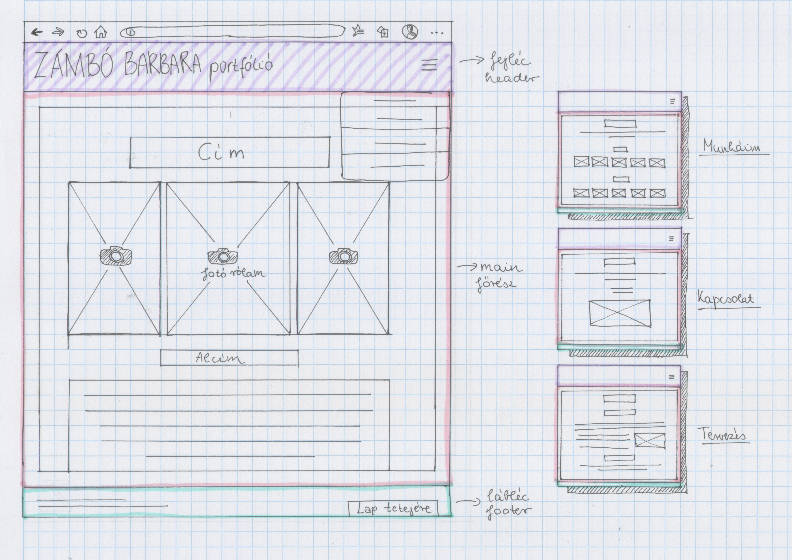

Tervezés
Eredeti terv
Grafikai terv
A weboldal 4 oldalból áll: Rólam, Munkáim, Kapcsolat, és Tervezés. A kép a legelső koncepciónak a grafikai tervét mutatja. Ez alapján a terv alapján a 3+1 oldal egy header-ből áll, ahol maga a főcím és a menü található. Ahogy a rajzon látható, eredetileg egy lenyitható menü lett volna a koncepció, ahonnan tovább lehet lépni a többi oldalra. A main, azaz a fő részben találhatóak fotók, szövegek, és az adott oldal témájának a címe, mind középre igazítva. A footer-ben, láblécben elhelyeztem pluszban mégegyszer az elérhetőségemet és egy "lap tetejére újra felvivő gombot". Ez az összes lapon megegyezik, mint a fejléc rész is. A weboldalt inkább letisztultabbnak terveztem meg, és a main résznek beállítottam egy kis szegélyt (margin), ami egy keretet ad neki. A címeknek, alcímeknek a betűközét megnöveltem, hogy azzal is jobban kiemeljem őket.
Nehézségek és változtatások
Ahogy már említettem, az eredeti terv egy lenyitható menü lett volna de nehézségekbe ütköztem a megvalósítása során, mint például: nem tudtam színnel kitölteni az egész blokkot, a listás formával is sokat próbálkoztam, hogy is lehetne a legjobb. Ezért úgy döntöttem, elvetem a lenyithatós lista ötletet és egy vertikális irányú menüsávra változtattam meg.
Az első, index.html oldalon, a beillesztett képek először az oldal kisebbítésekor egymás alá ugrottak, így a szebb megjelenés érdekében a képek összecsúsztatásával oldottam meg ezt a problémát. A "Munkáim" oldalon, a fotók látványosabb szemléltetésének a szempontjából egy nagyítási transzformációt alkalmaztam rájuk. A menü és a képek elrendezésén kívül, maradtam az eredeti elképzelésemnél.